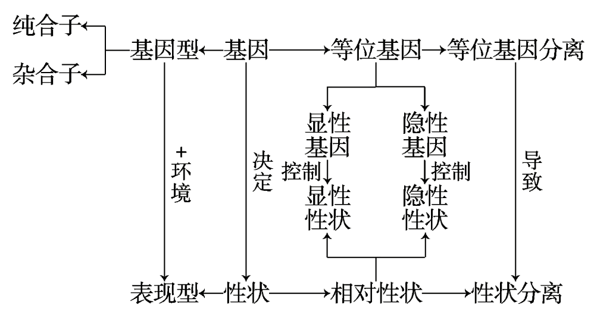

8月15日生物课随笔
课程相关
此为2021年8月15日生物学科营笔记，仅供学习参考。
遗传学中的有关概念
交配类
杂交 任意两种基因型的个体进行有性生殖产生下一代的行为。
自交 同种基因型的个体间杂交（不一定是自己和自己）。
测交 检测某一显性个体是纯合子还是杂合子。
- 若显性个体和隐性个体杂交后，后代均为显性个体，则显性个体为纯合子。
- 若显性个体和隐性个体杂交后，后代中显性个体和隐性个体的比例为$1:1$，则显性个体为杂合子。
隐性个体$aa$只能提供一种配子（$a$），而显性个体可能提供两种配子（$A$或$a$）：
若后代均为显性，则显性个体仅可能提供配子$A$，故显性个体为$AA$（纯合子）；
若后代部分显性、部分隐性，则显性个体两种配子均可能提供，故显性个体为$Aa$（杂合子）。
正交（反交） 相对概念，由父本、母本决定。
例如定义高茎作为母本、矮茎作为父本时为正交，则矮茎作为母本、高茎作为父本时为反交。
回交 （群体遗传） $F_1$和亲代之一杂交。
性状类
相对性状 同一性状的不同表现型，显性性状和隐性性状。
显性基因$A$控制显性性状，隐性基因$a$控制隐性性状。$A$和$a$同时出现时，仅表现出显性性状。例如$AA$和$Aa$表现出显性性状，$aa$表现出隐性性状（不完全显性等情况另外，此处仅讨论完全显性）。
性状分离 子代与亲代的性状不同。例如$F_1$为高茎，自交后高茎与矮茎的比例为$3:1$，即出现了性状分离。
显性的相对性 例如红花（$RR$）与白花（$rr$）杂交，子代为粉色（$Rr$），称为不完全显性。
基因类
基因 有遗传效应的DNA片段。
等位基因 在同源染色体上相同位置，控制相对性状的基因。
非等位基因 若$A$与$a$、$B$与$b$为等位基因，则$A$与$B$、$a$与$b$为非等位基因。
非同源染色体上的基因自由组合。 当$A$、$B$在1号染色体上，$E$在2号染色体上，则$A$和$B$是连锁的、$A$和$E$是自由组合的、$B$和$E$是自由组合的。
相同基因 在同源染色体上相同位置，可以是等位基因（$A$和$a$）也可以是相同基因（$A$和$A$）。
个体类
性状（抽象）$\rightarrow$ 表现型（具象）。基因决定性状，基因型受环境影响决定表现型。
纯合子 自交后代不出现性状分离，自交后代均为纯合子。例如$AA$、$aa$、$AAbb$等。
杂合子 只要有一对基因杂合就是杂合子，自交后代既有纯合子又有杂合子，杂合子自交往往出现性状分离（并不绝对）。例如$Aa$等。

孟德尔获得成功的原因
统计学的方法非常重要。
基因的分离定律
实质
生殖 产生下一代。
基因重组 控制不同性状的基因发生了重新组合。
适用范围：
- 有性生殖 发生了基因重组的生殖方式。精卵结合（卵式生殖）最为常见。
- 真核生物 原核生物不存在基因分离。
- 细胞核遗传 真核生物的细胞质遗传不遵循此种规律。
交配类型及结果
①②③ 显性纯合子个体和其他显性（或隐性）个体杂交。由于显性纯合子（$DD$）只能产生一种配子（$D$），故后代表型均为显性。
④ 杂合子自交。
⑤⑥ 隐性个体和其他显性（或隐性）个体杂交。
应用
在杂交育种上的应用
显性性状的选择 例如与平常不同的植物品种，自交后红（$AA$与$Aa$）、白（$aa$）比例为$3:1$，继续自交比例为$5:3$，继续自交比例为$9:7$。若共自交$n$代，则红、白比例为$(2^n+1):(2^n-1)$。
课后作业 $Aa$连续自交, 每一代均淘汰$aa$个体. 请问: 经过多少代以后, $AA$所占的比 $\geq95%$?
自交的群体中杂合子是非常少的。
在人类遗传病预防上的应用
隐性遗传病 禁止近亲结婚。每个人都是杂合子，携带了很多隐性致病基因，近亲结婚出现隐性纯合的概率大大增加，从而使后代生病。后代出现畸形胎儿的可能性非常大。
解题指导
显隐性确定
例题 性状和基因之间不是一一对应的关系，可能由两对等位基因控制一对相对性状，但在没有特别说明的情况下可以理解为一一对应。
遗传图解的书写
应该包括：
- 符号 如杂交（$\times$）、自交（$\otimes$）、亲本（$P$）、子$n$代（$F_n$）、父本（$♂$）、母本（$♀$）等；
- 表型 如高茎、矮茎等；
- 基因型 写在表型的下面；
- 比例 是否写完整都可以，计算时经常使用$\frac{1}{4}$、$\frac{3}{4}$等形式来表达。
系谱图分析
- $\circ$ 正常女性
- $\bullet$ 患病女性
- $\square$ 正常男性
- $\blacksquare$ 患病男性
例题 （1）常染色体的隐性遗传；（2）$Aa$；$aa$；（3）$\frac{2}{3}$。
育种上的运用
例题 （1）不能确定；（2）选多对有角牛杂交：如果后代都有角，那么有角为隐性性状；如果后代有些有角有些无角，那么有角为显性性状。
随堂演练
两只灰身果蝇交配
自由交配即为随机交配。
| ♀\♂ | $A=p$ | $a=q$ |
|---|---|---|
| $A=p$ | $AA=p^2$ | $Aa=pq$ |
| $a=q$ | $Aa=pq$ | $aa=q^2$ |
一个二倍体的种群中
二倍体的种群 $AA$、$Aa$或$aa$；三倍体即为$AAA$、$AAa$、$Aaa$或$aaa$。
复等位基因 可选的基因不只有$A$和$a$，而是存在$a_1$、$a_2$、$…$、$a_n$。例如人的血型：A型为$I^AI^A$或$I^Ai$，B型为$I^BI^B$或$I^Bi$，AB型为$I^AI^B$，O型为$ii$。
8月15日生物课随笔